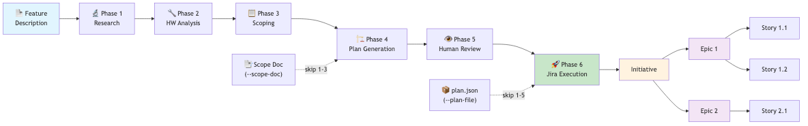
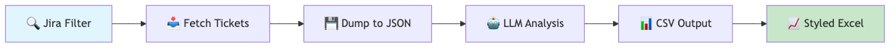

Agentic Workflows¶
Agentic workflows are operator-oriented flows orchestrated by agent_cli.py. Each agent also has a standalone CLI. Some workflows are deterministic, while others use an LLM to research, analyze, scope, and plan.
All workflows are invoked via agent-cli <agent> <command> or standalone <agent-name> <command>. By default, workflows operate in dry-run mode — no Jira tickets are created or modified until --execute is explicitly passed.
Table of Contents¶
- Gantt Planning Workflows
- Gantt Snapshots
- Gantt Release Monitor
- Gantt Polling Mode
- Feature Plan (Scope Document → Jira)
- Drucker Hygiene Workflow
- Drucker Polling Mode
- Hypatia Documentation Workflow
- Bug Report Workflow
- Release Planning Workflow
- Global Workflow Flags
- Workflow Architecture
Gantt Planning Workflows¶
Gantt provides three planning-and-delivery capabilities: snapshots of a project backlog, release monitoring for Jira fix versions, and feature plans that produce Jira ticket hierarchies from scope documents.
Gantt Snapshots¶
Build, persist, and review Jira-grounded planning snapshots with milestone proposals, dependency views, and risk summaries.
# Create and persist a new planning snapshot
agent-cli gantt-snapshot --project STL --planning-horizon 120
# Add build/test/release evidence inputs to the snapshot
agent-cli gantt-snapshot --project STL --evidence build.json test.yaml release.md
# List stored snapshots, optionally scoped to one project
agent-cli gantt-snapshot-list --project STL
# Load a stored snapshot by ID and re-export it
agent-cli gantt-snapshot-get --snapshot-id a1b2c3d4 --output stl_snapshot.json
Snapshots are stored under data/gantt_snapshots/<PROJECT>/<SNAPSHOT_ID>/.
Gantt Release Monitor¶
Build, persist, and review release-health reports for one or more Jira fix versions.
# Create and persist a release monitor report
agent-cli gantt-release-monitor --project STL --releases 12.1.1.x,12.2.0.x
# Scope the report and re-export ad hoc files
agent-cli gantt-release-monitor --project STL --scope-label CN6000 --output stl_release_monitor.json
# List and retrieve stored reports
agent-cli gantt-release-monitor-list --project STL
agent-cli gantt-release-monitor-get --report-id 12345678-1234-1234-1234-123456789abc
Release-monitor reports are stored under data/gantt_release_monitors/<PROJECT>/<REPORT_ID>/.
Gantt Polling Mode¶
Run Gantt as an always-on CLI poller that performs one-shot work on a schedule.
# Run one Gantt polling cycle (planning snapshot only)
agent-cli gantt-poll --project STL
# Run two cycles with planning + release monitoring and proactive Teams notifications
agent-cli gantt-poll --project STL --run-release-monitor \
--releases 12.1.1.x --max-cycles 2 --poll-interval 60 --notify-shannon
Teams integration: Gantt one-shot tasks can also be triggered from Microsoft Teams via Shannon in
#agent-gantt, for example@Shannon /planning-snapshot project_key STLor@Shannon /release-monitor project_key STL releases 12.1.1.x.
Feature Plan (Scope Document → Jira)¶
Generate a Jira project plan (Initiative → Epics → Stories) from a scope document, feature description, or previously generated plan. The recommended path is for the engineering team to author a scope document (JSON, Markdown, PDF, or DOCX) and feed it via --scope-doc.
# 1. Generate plan from scope document (dry-run — no tickets created)
agent-cli feature-plan --project STL --feature "SPDM Attestation" \
--scope-doc scope.json
# 2. Review the generated plan
cat plans/STL-spdm-attestation/plan.md
# 3. Execute: create tickets in Jira under an existing Initiative
agent-cli feature-plan --project STL \
--plan-file plans/STL-spdm-attestation/plan.json \
--initiative STL-74071 --execute
Entry Points¶
| Entry Point | Phases Executed | Use When |
|---|---|---|
--scope-doc FILE |
Phases 4–6 (plan → review → execute) | Recommended — engineering team provides a scope document |
--feature "text" or --feature-prompt FILE |
All 6 phases | Starting from scratch — agent does its own research |
--plan-file FILE |
Phase 6 only (execute) | You already have a reviewed plan.json |
Feature Plan Flags¶
| Flag | Description |
|---|---|
--feature TEXT |
Feature description string |
--feature-prompt FILE |
Rich feature prompt file (Markdown) — takes precedence over --feature |
--scope-doc FILE |
Pre-existing scope document (JSON/MD/PDF/DOCX) — skips research/HW/scoping phases |
--plan-file FILE |
Previously generated plan.json — skips all agentic phases |
--initiative KEY |
Existing Initiative ticket key (e.g. STL-74071). If omitted, auto-created. |
--execute |
Actually create Jira tickets (default: dry-run) |
--force |
Skip duplicate-ticket and DELETE confirmation prompts |
--cleanup CSV |
Delete tickets listed in created_tickets.csv. Dry-run by default; add --execute to delete. |
--docs FILE [FILE ...] |
Spec documents / datasheets for the research phase |
--output-dir DIR |
Root directory for output (default: plans/<PROJECT>-<slug>/) |
Output Files¶
All output lands in plans/<PROJECT>-<slug>/:
| File | Description |
|---|---|
plan.json |
Machine-readable Jira plan (Epics + Stories) |
plan.md |
Human-readable Markdown plan |
scope.json |
Scoping agent output |
research.json |
Research agent output |
hw_profile.json |
Hardware analyst output |
created_tickets.csv |
Ticket keys created by --execute (feed to --cleanup to undo) |
Drucker Hygiene Workflow¶
Build, persist, and review Jira hygiene reports with ticket-level remediation suggestions.
# Create and persist a Drucker hygiene report
agent-cli drucker-hygiene --project STL
# Tighten the stale threshold and export ad hoc files
agent-cli drucker-hygiene --project STL --stale-days 21 --output stl_hygiene.json
Each drucker-hygiene run stores a durable copy under data/drucker_reports/<PROJECT>/<REPORT_ID>/
and also writes a review-session JSON file alongside the exported report files so the
proposed Jira actions can be reviewed before execution.
Teams integration: Drucker hygiene can also be triggered from Microsoft Teams via
@Shannon /hygiene-run project_key STLin the#agent-druckerchannel. See the Agents section in README for details.
Drucker Polling Mode¶
Run Drucker as an always-on CLI poller that executes scheduled hygiene scans and can proactively notify Teams through Shannon.
# Run one hygiene polling cycle
agent-cli drucker-poll --project STL
# Run two cycles and post the summaries to Shannon
agent-cli drucker-poll --project STL --max-cycles 2 --poll-interval 300 --notify-shannon
Hypatia Documentation Workflow¶
Build, persist, and review source-grounded internal documentation candidates for repo Markdown and optional Confluence targets.
# Generate a repo-owned documentation draft
agent-cli hypatia-generate --doc-title "STL Build Notes" --docs README.md AGENTS.md
# Target a specific repo doc path and documentation class
agent-cli hypatia-generate --doc-title "Fabric Bring-Up Guide" \
--doc-type how_to --docs docs/source.md --target-file docs/fabric-bring-up.md
# Add evidence files and stricter validation for release-note support
agent-cli hypatia-generate --doc-title "Release Notes Support" \
--doc-type release_note_support --docs notes.md --evidence release.json --doc-validation strict
# Stage a Confluence publication target alongside the repo draft
agent-cli hypatia-generate --doc-title "STL Weekly Summary" \
--docs README.md --confluence-title "STL Weekly Summary" --confluence-space ENG
Each hypatia-generate run stores a durable copy under data/hypatia_docs/<DOC_ID>/
and writes a review-session JSON plus per-target Markdown patch drafts alongside the
exported record files so publication stays reviewable before execution.
Bug Report Workflow¶
Generate a cleaned, enriched bug report from a Jira filter.
# Basic usage — looks up filter by name, pulls tickets, sends to LLM, converts to Excel
agent-cli bug-report --filter "SW 12.1.1 P0/P1 Bugs" --timeout 800
# With verbose logging
agent-cli bug-report --filter "SW 12.1.1 P0/P1 Bugs" --timeout 800 --verbose
# Override the LLM model for this run
agent-cli bug-report --filter "SW 12.1.1 P0/P1 Bugs" --model developer-opus --timeout 800
# Custom prompt file
agent-cli bug-report --filter "My Filter" --prompt my_prompt.md --timeout 600
# With dashboard pivot columns
agent-cli bug-report --filter "SW 12.1.1 P0/P1 Bugs" --d-columns Phase Customer Product Module Priority
Steps performed:
| Step | Action | Output |
|---|---|---|
| 1 | Connect to Jira | — |
| 2 | Look up filter by name from favourite filters | Filter ID |
| 3 | Run filter to get tickets with latest comments | Issues list |
| 4 | Dump tickets to JSON | <filter_name>.json |
| 5 | Send JSON + prompt to LLM for analysis | llm_output.md + extracted files |
| 6 | Convert any extracted CSV to styled Excel | <name>.xlsx |
Bug Report Flags¶
| Flag | Description |
|---|---|
--filter NAME |
Jira filter name to look up (required) |
--prompt FILE |
LLM prompt file (default: config/prompts/cn5000_bugs_clean.md) |
--d-columns COL [COL ...] |
Column names for the Excel Dashboard pivot sheet |
--output FILE |
Override output filename |
Release Planning Workflow (Legacy — Removed)¶
These legacy commands (--plan, --analyze, --vision, --sessions, --resume) were removed during the agent-cli restructure. Use agent-cli feature-plan for feature planning workflows.
Global Workflow Flags¶
These flags apply to all agentic workflows:
| Flag | Description |
|---|---|
--workflow NAME |
Workflow to run (bug-report, drucker-hygiene, drucker-poll, feature-plan, gantt-poll, gantt-release-monitor, gantt-release-monitor-get, gantt-release-monitor-list, gantt-snapshot, gantt-snapshot-get, gantt-snapshot-list, hypatia-generate) |
--project KEY |
Jira project key |
--stale-days DAYS |
Stale threshold for drucker-hygiene |
--poll-interval SECS |
Poll interval for gantt-poll and drucker-poll |
--max-cycles N |
Number of polling cycles (0 means continuous mode) |
--notify-shannon |
Post proactive poller summaries through Shannon |
--evidence FILE ... |
Evidence files for workflows that accept build/test/release/meeting context |
--doc-title TEXT |
Document title for hypatia-generate |
--doc-type TYPE |
Documentation class for hypatia-generate |
--doc-validation PROFILE |
Validation profile for hypatia-generate (default, strict, sphinx) |
--target-file FILE |
Repo Markdown target for hypatia-generate |
--confluence-title TITLE, --confluence-page PAGE, --confluence-space SPACE |
Optional Confluence publication target for hypatia-generate |
--model MODEL, -m |
LLM model name override (e.g. developer-opus, gpt-4o) |
--timeout SECS |
LLM request timeout in seconds |
--env FILE |
Load a specific .env file |
-v, --verbose |
Enable verbose (DEBUG-level) logging |
-q, --quiet |
Minimal stdout output |
Workflow Architecture¶
Feature Plan Workflow¶

Bug Report Workflow¶
